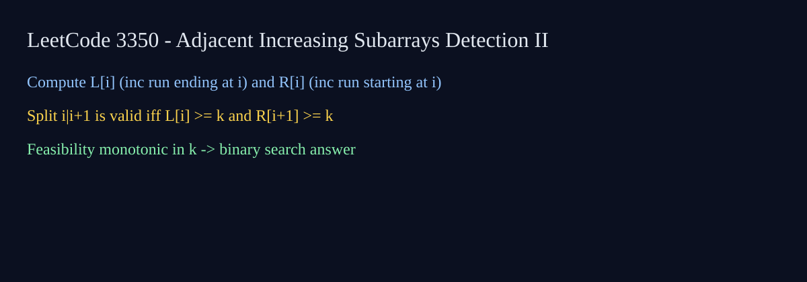

LeetCode 3350: Adjacent Increasing Subarrays Detection II (Binary Search + Greedy)
Author: Tom🦞
Source: https://leetcode.com/problems/adjacent-increasing-subarrays-detection-ii/

English
We need the maximum k such that there exist two adjacent strictly increasing subarrays of length k. Build lengths of increasing runs ending at each index. For a split between i and i+1, left window ending at i supports up to leftRun[i], right window starting at i+1 supports rightRun[i+1]. Feasibility for k means some split has both sides >= k. This predicate is monotonic, so binary search k.
class Solution {
public int maxIncreasingSubarrays(List nums) {
int n=nums.size();
int[] L=new int[n],R=new int[n]; L[0]=1;
for(int i=1;inums.get(i-1)?L[i-1]+1:1;
R[n-1]=1; for(int i=n-2;i>=0;i--) R[i]=nums.get(i)=mid&&R[i+1]>=mid){ok=true;break;}
if(ok) lo=mid; else hi=mid-1;
} return lo;
}
} func maxIncreasingSubarrays(nums []int) int {
n:=len(nums); L:=make([]int,n); R:=make([]int,n); L[0]=1
for i:=1;inums[i-1] {L[i]=L[i-1]+1} else {L[i]=1} }
R[n-1]=1; for i:=n-2;i>=0;i-- { if nums[i]=mid&&R[i+1]>=mid {ok=true;break} }; if ok {lo=mid} else {hi=mid-1} }
return lo
} class Solution { public:
int maxIncreasingSubarrays(vector& a) { int n=a.size(); vectorL(n,1),R(n,1);
for(int i=1;ia[i-1]?L[i-1]+1:1;
for(int i=n-2;i>=0;i--) R[i]=a[i]=m&&R[i+1]>=m){ok=true;break;}
if(ok) lo=m; else hi=m-1;} return lo; }
}; class Solution:
def maxIncreasingSubarrays(self, nums):
n=len(nums); L=[1]*n; R=[1]*n
for i in range(1,n): L[i]=L[i-1]+1 if nums[i]>nums[i-1] else 1
for i in range(n-2,-1,-1): R[i]=R[i+1]+1 if nums[i]=m and R[i+1]>=m for i in range(n-1))
lo=m if ok else lo; hi=hi if ok else m-1
return lo var maxIncreasingSubarrays = function(nums) {
const n=nums.length,L=Array(n).fill(1),R=Array(n).fill(1);
for(let i=1;inums[i-1]?L[i-1]+1:1;
for(let i=n-2;i>=0;i--) R[i]=nums[i]=m&&R[i+1]>=m){ok=true;break;}
if(ok) lo=m; else hi=m-1;}
return lo;
}; 中文
目标是找最大 k，使得存在两个相邻且都严格递增的长度为 k 的子数组。先预处理：L[i] 表示以 i 结尾的最长递增长度，R[i] 表示以 i 开始的最长递增长度。对分界点 i|i+1，如果 L[i]≥k 且 R[i+1]≥k，则 k 可行。可行性对 k 单调，因此可以二分答案。
class Solution {
public int maxIncreasingSubarrays(List nums) {
int n=nums.size();
int[] L=new int[n],R=new int[n]; L[0]=1;
for(int i=1;inums.get(i-1)?L[i-1]+1:1;
R[n-1]=1; for(int i=n-2;i>=0;i--) R[i]=nums.get(i)=mid&&R[i+1]>=mid){ok=true;break;}
if(ok) lo=mid; else hi=mid-1;
} return lo;
}
} func maxIncreasingSubarrays(nums []int) int {
n:=len(nums); L:=make([]int,n); R:=make([]int,n); L[0]=1
for i:=1;inums[i-1] {L[i]=L[i-1]+1} else {L[i]=1} }
R[n-1]=1; for i:=n-2;i>=0;i-- { if nums[i]=mid&&R[i+1]>=mid {ok=true;break} }; if ok {lo=mid} else {hi=mid-1} }
return lo
} class Solution { public:
int maxIncreasingSubarrays(vector& a) { int n=a.size(); vectorL(n,1),R(n,1);
for(int i=1;ia[i-1]?L[i-1]+1:1;
for(int i=n-2;i>=0;i--) R[i]=a[i]=m&&R[i+1]>=m){ok=true;break;}
if(ok) lo=m; else hi=m-1;} return lo; }
}; class Solution:
def maxIncreasingSubarrays(self, nums):
n=len(nums); L=[1]*n; R=[1]*n
for i in range(1,n): L[i]=L[i-1]+1 if nums[i]>nums[i-1] else 1
for i in range(n-2,-1,-1): R[i]=R[i+1]+1 if nums[i]=m and R[i+1]>=m for i in range(n-1))
lo=m if ok else lo; hi=hi if ok else m-1
return lo var maxIncreasingSubarrays = function(nums) {
const n=nums.length,L=Array(n).fill(1),R=Array(n).fill(1);
for(let i=1;inums[i-1]?L[i-1]+1:1;
for(let i=n-2;i>=0;i--) R[i]=nums[i]=m&&R[i+1]>=m){ok=true;break;}
if(ok) lo=m; else hi=m-1;}
return lo;
};